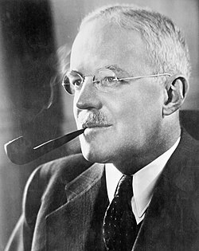

Allen Dulles
CIA director, 1893 to 1969

A lawyer and spy who ran the Office of Strategic Services' station in Bern, Switzerland, from late 1942, and in March 1945 negotiated the surrender of German forces in northern Italy. He was Director of Central Intelligence from February 1953 to November 1961, the first civilian in the post, until he was forced to resign after the Bay of Pigs. He later sat on the Warren Commission. 1
MKUltra began on his order on April 13, 1953. His CIA also built the U-2 spy plane, whose high, sunlit flights from 1955 set off a wave of UFO reports. A 1997 CIA history says Air Force investigators knew the cause but kept it from the public, and that CIA officers later estimated over half of the UFO reports from the late 1950s through the 1960s were reconnaissance flights. 2,3
When UFO researchers Leon Davidson and Donald Keyhoe wrote to the CIA in 1958 asking about its role, the agency kept its involvement hidden, which the same history says only fed speculation. Some versions of the Magenta crash story say the OSS took that craft from Italy in 1944 or 1945; no record of this has been found. 3,4
Open in the interactive Watcher
Related
- CIA Director of Central Intelligence, 1953 to 1961
- MKUltra Ordered MKUltra
- OSS OSS station in Bern
- Magenta crash story
Sources
- Allen Dulles Wikipedia
- MKUltra Wikipedia
- CIA's Role in the Study of UFOs, 1947–90 (Gerald K. Haines) CIA, Studies in Intelligence, 1997
- Incidente di Magenta Wikipedia (Italian)